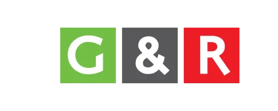
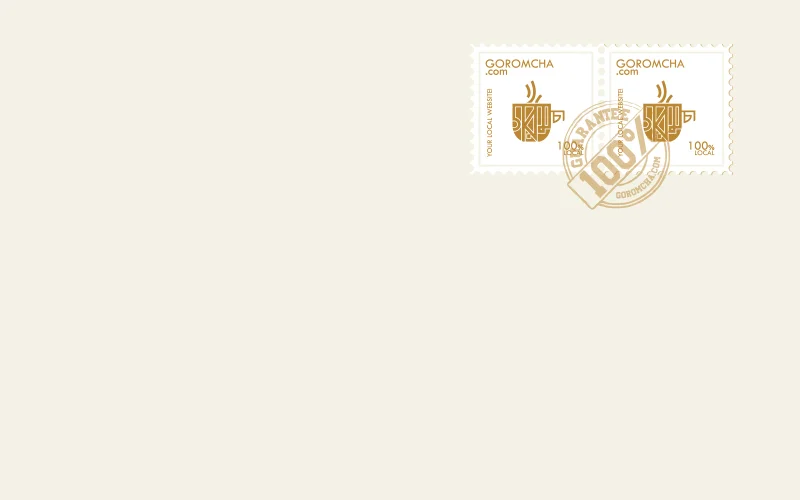
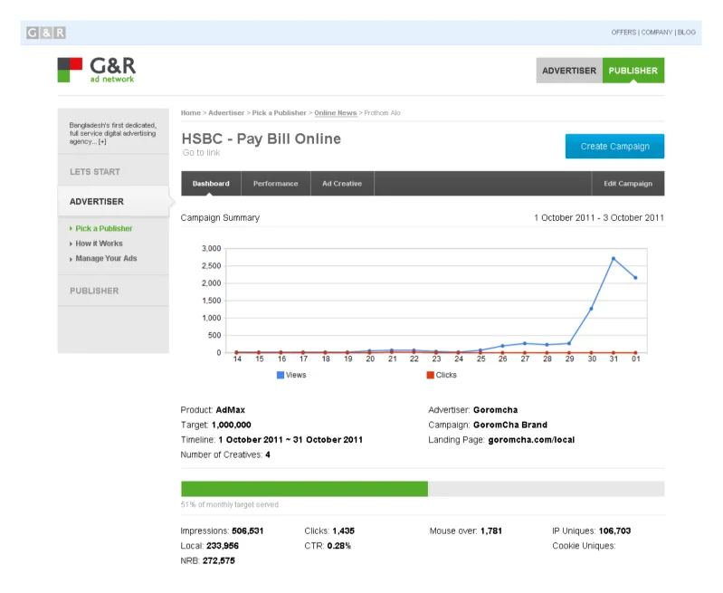
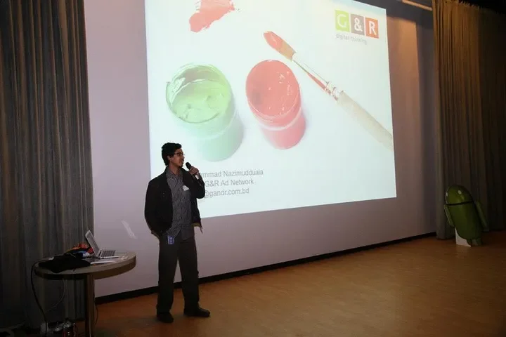
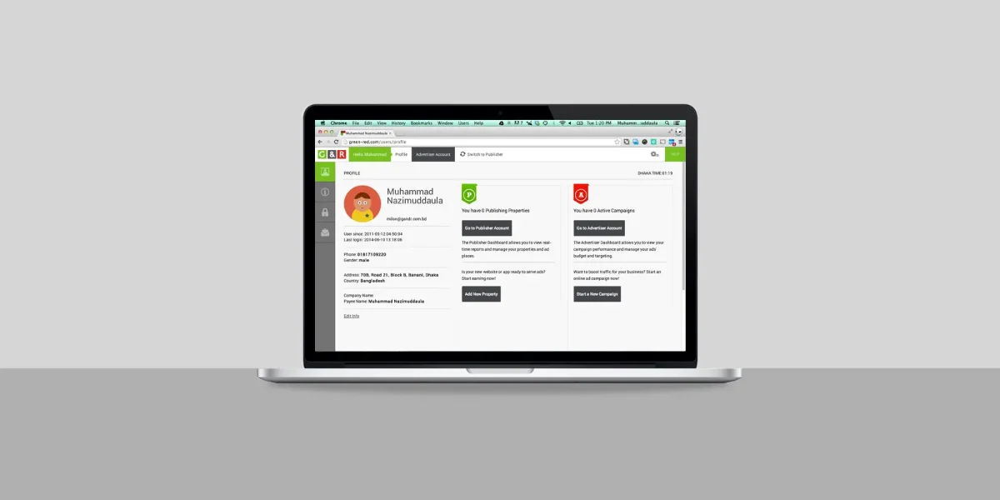

Green and Red Technologies, known as G&R, is Bangladesh's first online advertising network. I co-founded it in 2009 as Art Director. This is the story of its first four years: finding the idea, building the team, and inventing a market that didn't exist yet.
In 2009, while freelancing for overseas clients and redesigning The Daily Star's website, I got an email out of nowhere from a man in London who'd worked at Google. He wanted to talk about the state of the internet in Bangladesh, a topic I hadn't given much thought to.

The G&R logo, simple by design.
That conversation changed how I saw the internet's potential in my own country, and by July 2009, G&R was officially incorporated. The name and logo were simple by design: Green and Red, the colors of Bangladesh. The first thing I ever drew for it was three small squares, like starting points, a loading sign, something's continuity.
That early mark for continuity carried through years of brand refreshes, evolving alongside the product itself while keeping the same core idea intact.
"The G&R logo represents the colors of Bangladesh, as does the name Green and Red."
Our first product, launched in January 2010, was Goromcha, a daily local information site for Bangladeshis. I poured everything into it: every icon, every interaction, all built from scratch with a small team and our first employee, a Partnerships Manager.

Goromcha, our first product, a daily local information site for Bangladeshis.
Goromcha never became the business we hoped for. But it taught us the actual shape of the Bangladeshi internet, its users, its publishers, its gaps, and that education became the foundation for everything that followed. Without it, we would never have understood the market well enough to build what came next.
By October 2010, we'd landed on something more specific: building Bangladesh's first online advertising network. Nobody around us really understood what that meant yet, including, honestly, me. We spent nearly a year and a half researching and testing before we had something real.
Early 2011 was a scramble of firsts: our first rented office, a shared rooftop room in Banani with four cubicles and one table. Pitching over 30 clients in a single quarter before we'd even launched. Introducing concepts to the Bangladeshi market that didn't exist locally yet, CPM, CPC, CTR, and trying to shift advertisers away from thinking in fixed ad placements toward thinking in real value. Many people laughed at us. Some advertisers rejected us outright. We kept going anyway.

The 1st version of G&R Ad Network, a simple dashboard covering only the important features. It was a learning phase for both us and market.
In July 2011, our first ads went live on two small sites, followed by permission to test on Prothom Alo, Bangladesh's most-read news site, which let us serve millions of test ads for free while we proved the model worked. That same month brought our first publisher partnership, and the network started to grow.
Growth from here came in small, hard-won steps: a second engineer hired in August 2011, right after we lost our first one, a loss that felt catastrophic at the time but eventually gave us the engineer who'd go on to become G&R's CTO. Our first sales hire came in November, after a year of engineers and me handling every client meeting ourselves. Our first major client signed on in October 2011.

In the early days, one of my regular activities were to present G&R wherever we got a floor. It's not something I normally enjoy but I am kind of proud about those days.
By 2012, we were a team of twelve who mostly ignored office hours but cared deeply about what we were building. We learned, painfully and gradually, how to read a client in the first ten minutes of a meeting, and used that instinct to sharpen our sales approach. I pitched almost exclusively in Bangla, not English, a deliberate choice. It positioned G&R as something genuinely local, and it let me actually say what I meant.
By late 2012, our publisher network had grown past 500, and paying them on time, no exceptions, became a point of principle even when it meant no budget left over for marketing our own brand. Most people outside the industry still couldn't pronounce our name.
Through 2012 and 2013, G&R shifted to become a product-only company, cutting the service work (website builds, Facebook app development) that had been subsidizing us but diluting our focus. That shift meant learning to actually run product properly: writing real requirements documents, using project management tools, building process where instinct alone used to carry us.
In mid-2013, with a new office and a system straining under its own success (at one point crashing entirely after serving nearly a billion ads in 25 days, a brutal lesson in infrastructure redundancy), I sat down with pencil and paper and sketched roughly a hundred screens by hand to rethink the entire ad network from the ground up.
G&R 2.0 launched in October 2013, anchored by our biggest campaign yet. It didn't last long, not because it failed, but because the business was moving too fast to sit still. Within months we'd outgrown it again, and G&R 3.0 became the next necessary rebuild: this time shaped heavily by real user feedback from our account managers and power users, standardized, localized, and built around what we'd actually learned rather than early guesswork.
G&R was featured on the startups wall at Google I/O 2014. In this video, we discuss the challenges and surprises of launching in the Bangla language.
By the time 3.0 shipped in early 2014, G&R had a bigger team, better process, and real infrastructure behind it, standardized, localized, and built around what we'd actually learned running the network at scale.

G&R 3.0, standardized and localized, with more control and tools for both advertisers and publishers.